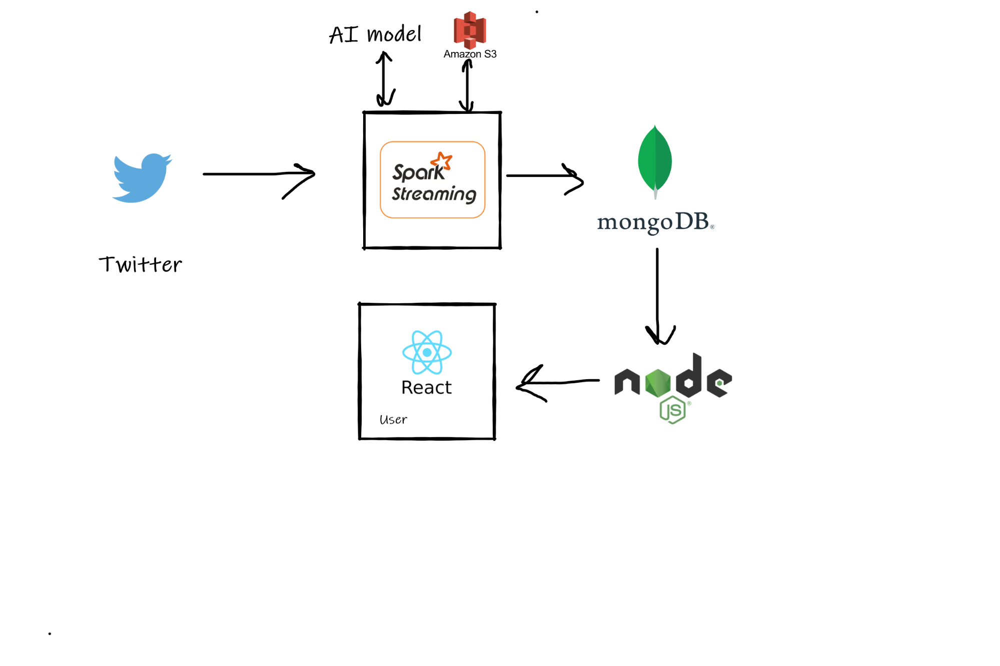

Twitter generates a lot of data , as much as an average of 6000 tweets per second , and these tweets hold valuable information too . The aim of this project is to aggregate the valuable information from raw data , convert it into structured data and then , visualize it .
In this project , we constantly analyze the tweets received from Twitter, We then search for all the hashtags within the tweet , We then call our AI model which will classify the tweet into several emotions (Joy, Angry , Confident , Fear , etc). Then we will group all the tweets based on hashtags , While grouping we also calculate the percentage of tweets for each emotion , and then send it to the database for further query and retrieval for Visualization by frontend. In between we do several other processes such as sorting of tweets based on whether the user that tweeted that tweet is verified or not. This will be the "priority order" of tweets within our app.The most important part is this all happens in real-time. The technical details are explained later in this post.
Example Of Use Case ;
Suppose that you are Prime Minister of India , and you just launched #SwachhBharatAbhiyan , now you may want to know the response / emotion of people regarding this . The common way to this , is to go to Twitter , Look for #SwachhBharatAbhiyan , and read all the tweets , and try to figure out the general emotion of users from those tweets. But even doing so won't get you enough information.
So , How can we solve this ?
In our project , the user navigates to our very simple website (With very complex backend architecture ) and then be able to search for a particular hashtag , or select one from trending hashtags , after selecting hashtag , a page will be opened , where a Line Chart will be shown , representing the different emotions , and theirs , variation with time . Below Line Chart , Different cards will be shown representing , "Total Tweet Counts" , "Total Joy Count", "Total Confident Count " , etc . Below that another Radar Chart is shown , Displaying percentage of different emotions. (i.e. The emotion with more percentage will cover more areas of the graph).
And below all , the Actual List of Tweets will be shown sorted by priority order. As a bonus , users may also be able to filter through different durations of time.
Technical Details :
As said earlier, Twitter generates at average 6000 tweets per second , approx. Now analyzing , classifying , grouping , aggregating , sorting, storing , so many tweets in such a small time , is well , very difficult , and doing all this in real time makes it even more difficult .

The above is a high-level architecture diagram , in detail some of the components will be hosted in the cloud in separate clusters .
Now , to do this we will be using a Big Data tool named as Apache Spark , The Apache Spark is able to give approx 100 ms Latency , more explanation for Apache Spark could be found on their official website.
There are other younger libraries that perform Streaming more efficiently than Spark , but we chose Spark because of its maturity and good community.
Apache Spark will be separately deployed as a cluster in the cloud , maybe using some cluster manager such as YARN , Mesos or Kubernetes.
We will be using AWS S3 to checkpoint the data from Spark , (Concept of checkpointing could also be referenced from Apache Spark's website).
The reason to select AWS S3 is that it is a pretty scalable and reliable object store in the cloud.
Our AI model is Watson Tone Analyzer provided by IBM , as it provides a set of APIs for analyzing we won’t have to separately host our AI model and scale it.
To store the processed data from Apache Spark , MongoDB will be used.
The reason to select MongoDB is its flexibility and NoSQl in nature.
Other stacks include as follows :
React : For Frontend , (Data Visualization , Query , Client interface)
Node js : For Backend Server (Frontend will talk to Backend ,for querying data, Backend will talk to MongoDB database).
Github: